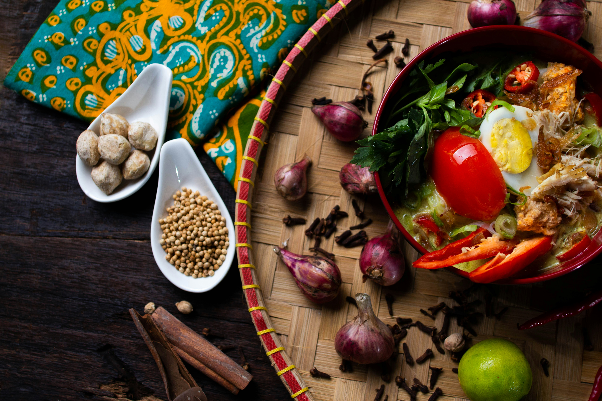

Kumpulan kurasi resep pilihan dengan cita rasa khas Nusantara hingga hidangan modern dirancang praktis dan teruji untuk menginspirasi meja makan Anda setiap hari. Curated by EY.

Pilih kategori favoritmu atau cari menu spesifik di bawah ini
CookWithEY adalah arsip kuliner digital yang dikurasi secara khusus untuk mendokumentasikan ragam resep rumahan teruji—mulai dari sajian harian autentik hingga kreasi hidangan penutup modern. Dirancang dengan panduan langkah yang terstruktur dan takaran presisi agar siapa pun dapat menyajikan hidangan istimewa dari dapur sendiri. Curated by EY.